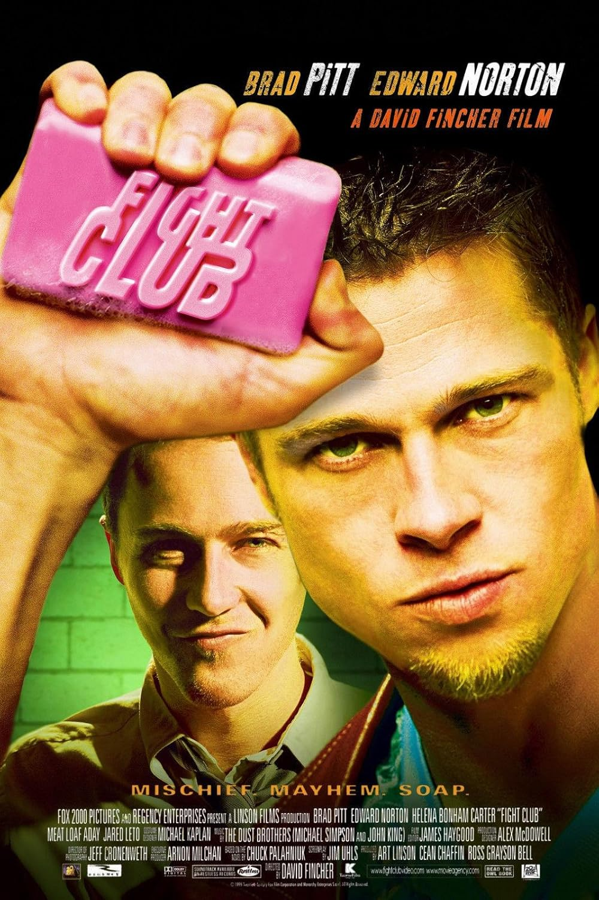
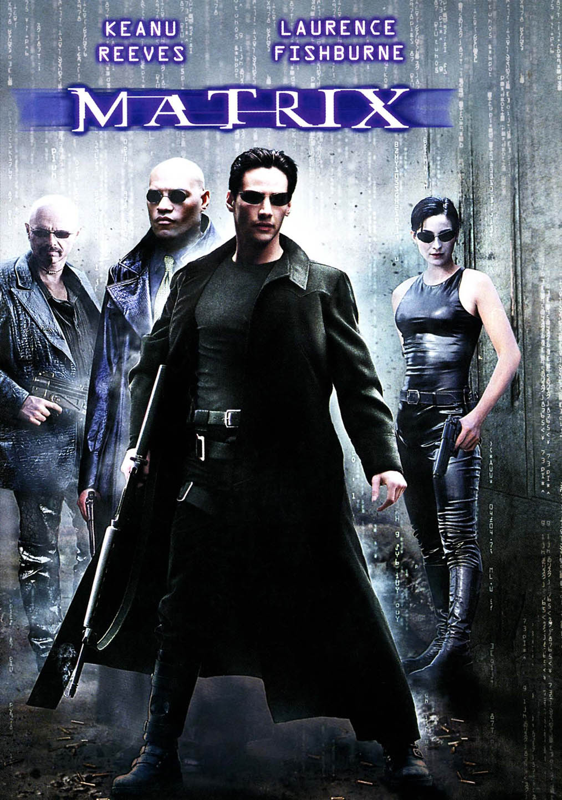
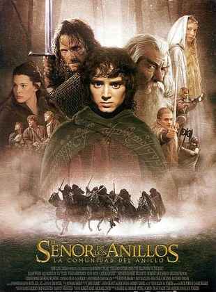
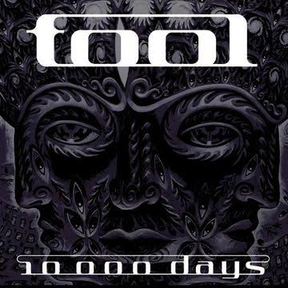
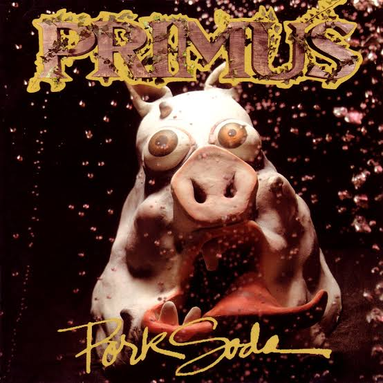
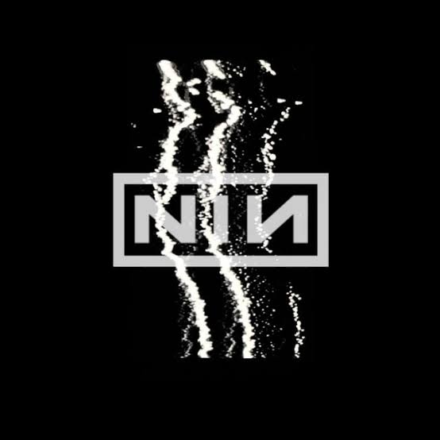

01 / HABILIDADES
Herramientas
de investigación
- 01 Batería / Drummer
- 02 Creatividad
- 03 Investigación
- 04 Trabajo en equipo
EXPEDIENTE DE CAMPO · N.º 01
⌖ Argentina
INVESTIGACIÓN ／ DESARROLLO
Investigar también es aprender a mirar aquello que otros pasan por alto.
01 / HABILIDADES
02 / CINE

El club de la peleaEl club de la pelea
Una mirada sobre la identidad, la violencia y la construcción del individuo.
MatrixMatrix
Realidad, percepción y la pregunta por aquello que creemos conocer.
El señor de los anillosEl señor de los anillos
Un viaje de amistad, poder y resistencia frente a una amenaza creciente.03 / MÚSICA

ToolTool
Sonoridades progresivas, oscuras y experimentales entre el metal y la exploración sonora.
PrimusPrimus
Una combinación singular de bajo virtuoso, estructuras poco convencionales y humor.
Nine Inch NailsNine Inch Nails
Electrónica industrial, intensidad y una estética marcada por la experimentación.04 / INTERACCIÓN JAVASCRIPT
Buscá una señal en los datos y revelá una nota del archivo.
El observatorio permanece en silencio.